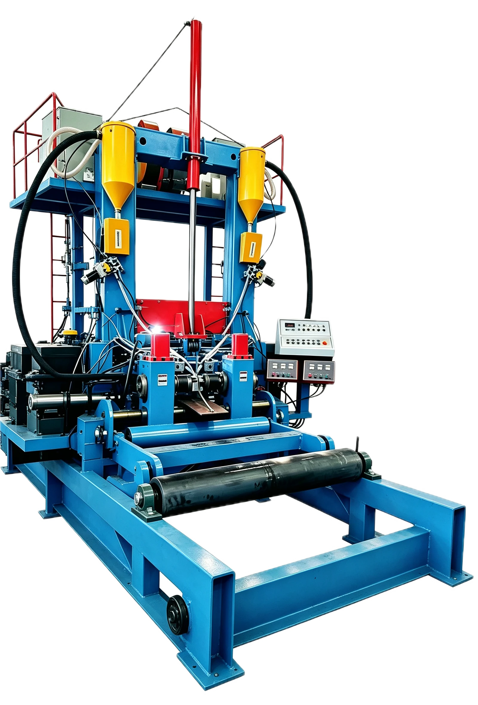

Complementary Machines
Ring forming machines usually feed a cage or mesh line — these are the neighbours.

WELDING MACHINERY
Baghouse Dust Collector Welding Machine
Cage body, head and bottom welding with the support rings this machine produces.

WELDING MACHINERY
H beam Horizontal Assembly and Welding Production Line
Automated fit-up and welding for H beam sections feeding a structural shop.

WELDING MACHINERY
3 in 1 Welding Station for H Beam
Fit-up, welding and straightening of H beam sections in one station.